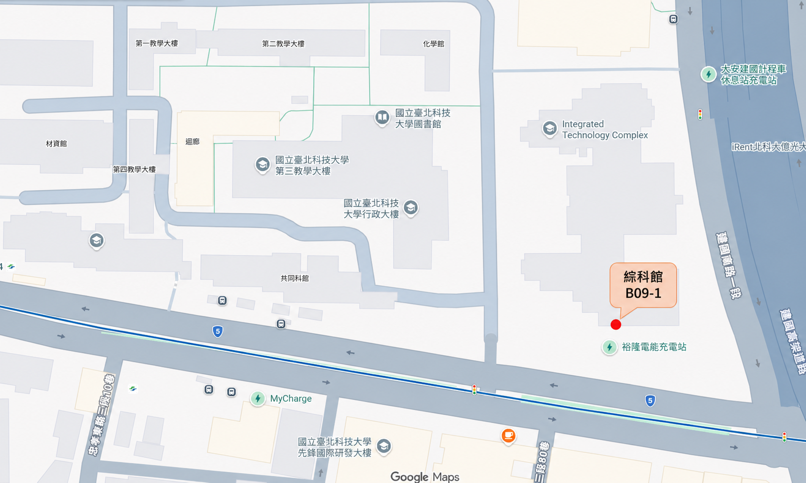

微奈米光學系統研究室
Nano-photonic and Micro-Optical System Lab.
地址
10608 臺北市大安區忠孝東路三段 1 號
位置
國立臺北科技大學 綜科館 B09-1 室
電話
(02) 2771-2171 #4382
Email
shihwen@ntut.edu.tw
Contact
國立臺北科技大學綜科館 B09-1 室。
Nano-photonic and Micro-Optical System Lab.
地址
10608 臺北市大安區忠孝東路三段 1 號
位置
國立臺北科技大學 綜科館 B09-1 室
電話
(02) 2771-2171 #4382
Email
shihwen@ntut.edu.tw

Campus
位於臺北市大安區，鄰近忠孝新生站，交通便利。
Building
研究室位於綜科館 B09-1 室。
Contact
研究合作與實驗室相關事務可透過 Email 聯繫。